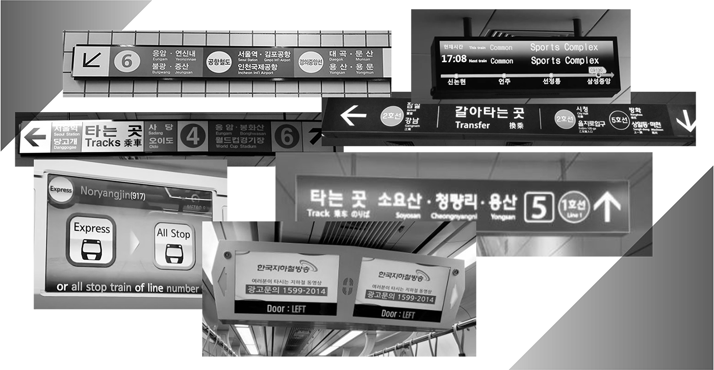
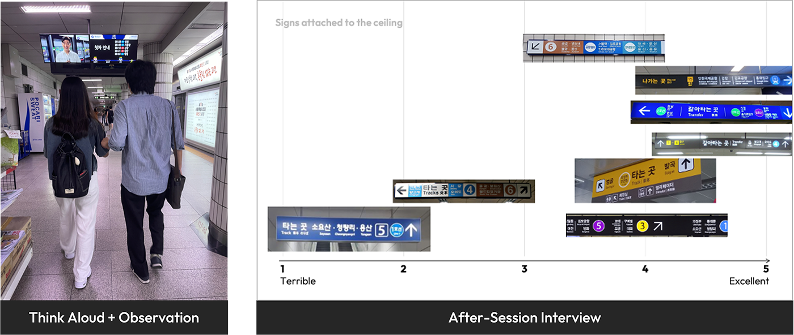
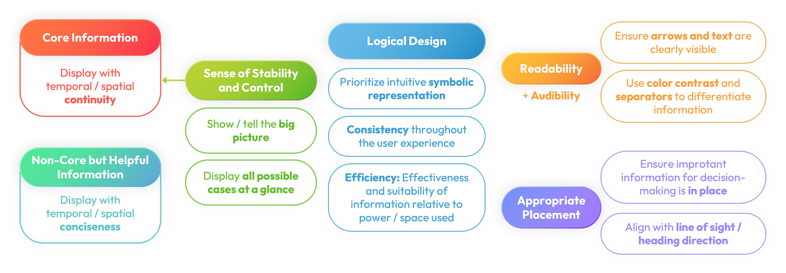
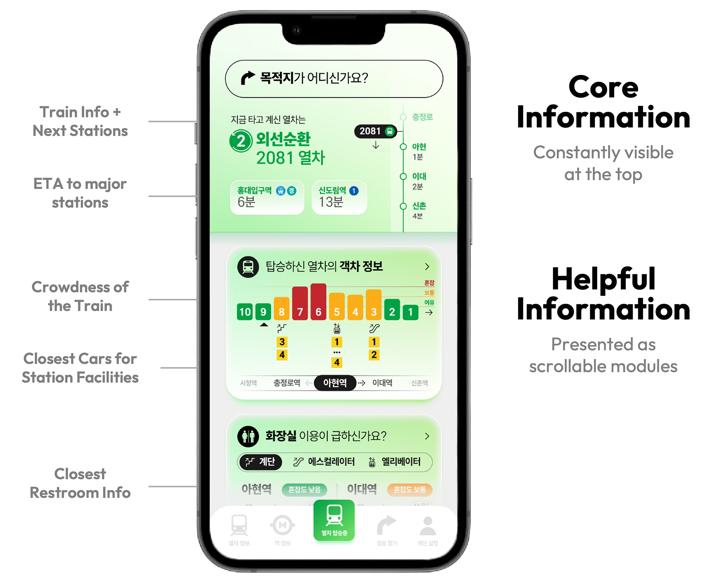

TTOKTTOK
A personally customized smart subway guide for every step of the journey
Primary Designer and Researcher | May 2024 - Dec 2024
19th Universal Design Contest Second Award & SOUL Best Project Award
- Team of 4 Injaerim Scholarship recipients
Background
The Seoul Metropolitan Subway is one of the world’s largest and most complex metro systems, with over 300 stations and an annual ridership exceeding 2 billion, thanks to its affordability and convenience.
However, despite its vital role as an accessible public transportation system, the Seoul Metropolitan Subway has faced persistent criticism for its information design. The lack of a unified design system and the top-down nature of the bureaucratic design process have left many users—especially newcomers to the giant metropolis, travelers, foreign residents, and individuals with disabilities—struggling to navigate the complex network, despite multiple efforts to improve the design system.
User Study Problem
With these challenges in mind, we launched the Seoul Subway Information System Redesign project. To identify users’ needs in detail, we formulated the following research question:
“What specific information and design elements do users need to successfully navigate the subway system?”
Qualitative User Study
We recruited 11 participants from various age groups, including four foreigners and three visually impaired individuals, and conducted qualitative user research.
First, we conducted a Think-Aloud + Observation session. Participants were asked to complete two subway journeys: one without using a smartphone—simulating scenarios where network access or battery is unavailable—and another using smartphone apps as they normally would. We accompanied participants throughout their journey, from locating the entrance and using apps and signage to plan their route, to navigating inside the station, boarding the subway, and reaching their destination. During the process, participants were instructed to verbalize which information design elements they referenced and how they made their navigation decisions.
Following the first session, we conducted semi-structured interviews. Participants were presented with various styles of information design available in Seoul Subway, such as signs and displays, and asked to rate them. The goal was to encourage participants to articulate their thoughts, discuss the strengths and weaknesses of the design to identify the elements most important to their subway navigation and riding experience.
Analysis & Design Framework
Afterward, four team members conducted a qualitative analysis of all the collected data, which included open, axial, and selective coding.
As a result, we developed a design framework that reflects users’ experiences and opinions, highlighting key elements that remain prominent across different information design mediums and demographic groups.
Design Problem
“How can we apply the design framework to improve the subway users’ experience?”
Target Issue
Sense of Stability and Control | TTOKTTOK addresses the issue that limited physical space for information in subway trains and stations prevents users from seeing the “big picture” of their journey, which is essential for a sense of stability and comfort.
Conveying Core Information | Additionally, current information design fails to effectively communicate “core information” to marginalized groups, such as non-Korean speakers and visually impaired individuals, leaving them uncertain and uneasy.
Appropriate Placement | While smartphones offer a good alternative to overcome the limitations of physical space, existing subway map apps are ineffective at providing core and helpful information. Users must navigate through multiple steps to retrieve the information they need, which causes delays and confusion.
Designing the Solution
We developed TTOKTTOK by directly applying the design framework, displaying “core information” with temporal and spatial continuity, while presenting “helpful information” concisely.
TTOKTTOK provides relevant information for each step of the subway journey by detecting the user’s location and situation via GPS and beacons. Drawing from user research data, it consistently displays the “core information” at the top of the screen, with “helpful information” below, presented in customizable modules. These modules adapt to the user’s travel patterns, pace, and preferences, learning intelligently over time.
TTOKTTOK is especially beneficial for the visually impaired, offering a consistent and predictable modular interface that is compatible with VoiceOver. It aims to provide users with a clear overview of their journey, offering greater freedom and ease for those whose travels are often limited by routes they can remember.